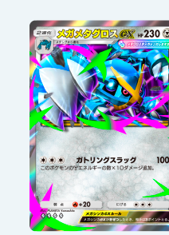
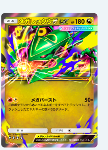
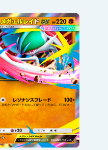
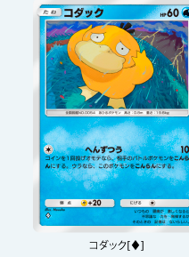
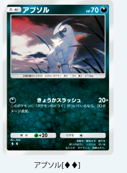
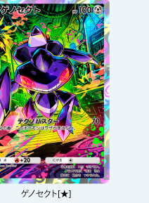
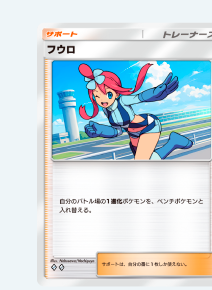
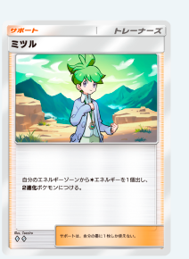
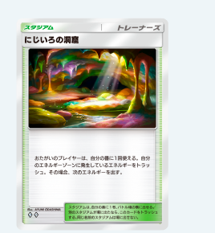

【ポケポケ】新パック「天空の支配者」まとめ｜メガレックウザex初登場・7月30日10時から！今やるべき準備
結論：新拡張パック「天空の支配者」は7月30日(木)10時00分登場。目玉は初登場のメガレックウザex。そして今回一番の朗報は「♦4以上確定」の実質天井システム実装です。パック砂時計を今むやみに使うのは待ったほうがいい理由と、8月末までのイベントスケジュール、無課金勢がもらえるもの一覧まで、公式発表の要点を5分で読める形にまとめました。
1. 「天空の支配者」基本情報
| 項目 | 内容 |
|---|---|
| パック名 | 拡張パック「天空の支配者」 |
| 登場日時 | 2026年7月30日(木)10時00分より順次 |
| 目玉カード | メガレックウザex（メガシンカしたすがたが初登場） |
| 関連グッズ | 8月1日(土)にメガレックウザ柄のコレクションファイル・コレクションボード登場 |
ホウエン地方の伝説のポケモン・レックウザのメガシンカ形態がついにポケポケ参戦です。メガルカリオex（波動ビート）→メガライジング→天空の支配者と続く、メガシンカ路線の第3弾にあたります。
2. メガレックウザexの判明性能と考察
公式の紹介映像から、現時点で以下の性能が確認できます（正式な数値は7月30日のゲーム内実装で確定）。
| 項目 | 判明内容 |
|---|---|
| HP | 180 |
| タイプ | ドラゴン |
| ワザ「メガバースト」 | このポケモンから炎と雷エネルギーをすべてトラッシュし、トラッシュした数×50ダメージ |
| ルール | メガシンカexルール（きぜつ時のポイントに注意） |
青天井級の火力が出る一方、撃った後はエネルギーが空になるリスクとの引き換えという、原作TCGのメガレックウザらしいド派手な設計です。エネルギー4枚トラッシュなら200ダメージでほぼ全ポケモンをワンパン圏内。炎・雷の2色エネルギー管理をどう安定させるかがデッキ構築の腕の見せどころになりそうです。ドラゴンタイプなので弱点を突かれにくい点も対戦環境では地味に強い要素です。
3. 判明している収録カード（公式カード紹介・紹介映像より）

♦♦♦♦

♦♦♦♦

♦♦♦♦

♦

♦♦

★

♦♦

♦♦

♦♦
▲ 公式サイトで公開された収録カード9枚（画像は公式サイトより）。このほかハクリュー・スワンナexが紹介映像で確認できています。下の表に全カードの性能をまとめました。
| カード | レア | 判明している性能 |
|---|---|---|
| メガレックウザex | ♦4 | HP180・ドラゴン。メガバースト＝炎雷エネ全トラッシュ×50ダメージ |
| メガメタグロスex | ♦4 | HP230。ガトリングスラッグ（無色3）100＋鋼エネの数×10追加。ディアルガ系と好相性 |
| メガエルレイドex | ♦4 | レゾナンスブレード100＋この番サポートを使っていたなら+50。ミツルと相性抜群 |
| ハクリュー | — | HP80。特性「りゅうのめぐみ」＝ベンチにいるなら1回、トラッシュのエネをバトル場の龍ポケモンに装着。メガレックウザの相棒最有力 |
| スワンナex | — | HP150・無色。ジェットウイング140（次の番ワザ不可）。フウロで欠点を帳消しに |
| ゲノセクト | ★1 | HP100。テクノバスター70（次の番ワザ不可）。非exの70打点＝オドリドリ系対策 |
| コダック | ♦1 | HP60。へんずつう＝コイン表で相手・ウラで自分がこんらんのネタ枠 |
| アブソル | ♦2 | HP70。きょうかスラッシュ20＋どうぐ装備で+30＝1ターン目から50点 |
| フウロ | ♦2 | サポート。バトル場の1進化ポケモンをベンチと入れ替え。1進化デッキ全般を強化 |
| ミツル | ♦2 | サポート。エネルギーゾーンから無色エネ1個を2進化ポケモンに装着。先攻2ターン目の大技起動を可能にする危険カード |
| にじいろの洞窟 | ♦2 | スタジアム。両者使用可＝エネルギーゾーンの次エネを入れ替え。多色デッキ救済＋トラッシュ肥やし |
ドラゴンライン＋エネ操作＋1進化・2進化支援と、デッキ構築の幅が一気に広がるラインナップです。全カードリストは実装日に判明し次第、対戦動画とあわせて追記予定です。
4. 同時実装の神アプデ4点
①「♦4以上確定」の実質天井システム
今回の発表で一番大事なのはここです。拡張パックの開封で一定の条件を満たすと、そのパック（＋同一エキスパンションのパック）の次回開封時に♦4（ダイヤ4）以上のカードが必ず出現するようになります。いわゆる「天井」に相当する仕組みで、爆死し続けて何も残らない事故が大幅に減ります。具体的な条件はアップデート後にゲーム内の「提供割合」で確認できます。
②デッキの2次元コード共有
自分のデッキを2次元コードで共有できるようになります。動画やSNSで見た構築をそのままコピーして遊べるようになるので、デッキレシピの流通速度が一気に上がるはず。当サイトの解説デッキも今後はコード付きで紹介できるようになります。
③図鑑登録の統合（入手済みカードも対象）
複数の拡張パックに収録されているカードを入手すると、収録されているすべての図鑑にまとめて登録されるようになります。例えば「最強の遺伝子」のミュウツーex（♦♦♦♦）を持っていれば「ハイクラスパックex」の図鑑にも登録済みになる仕様で、すでに入手済みのカードも遡って適用されます。図鑑コンプ勢には大型の救済です。
④おかえりミッション・まとめて受け取り など
- 一定期間ログインしていない人にパック砂時計120個などがもらえる「おかえりミッション」が発生
- テーマコレクションやデッキミッションの報酬を「まとめて受け取る」改修
- ミッション画面の改修
5. 今やるべき準備（砂時計は温存！）
- パック砂時計・課金パワーを7月30日まで温存する — ♦4以上確定の新仕様は「天空の支配者」登場と同時に始まります。今のパックで使い切るより、新パックで天井を意識しながら剥く方が期待値が高い。
- ゲットチャレンジのチケット類も整理しておく — 8月中旬にパチリス・ダンバルのプロモが来るので、イベントショップチケットの使い道は計画的に。
- ハイクラスパックex再登場（8月中旬）を見越す — 図鑑統合により、旧パックで入手済みのカードがハイクラス図鑑にも反映されます。再登場時に「本当に足りないカード」だけ狙えるよう、図鑑の欠けを事前にチェック。
6. 無課金勢がもらえるもの（エリートデッキ・便利カード）
エリートデッキプレゼントミッション（7月下旬〜10月末）
ミッション達成で「メガルカリオex」と「エビワラーex」入りの闘タイプデッキが丸ごともらえます。どちらも少ないエネルギーですぐワザを使える速攻型のポケモンexで、もらってすぐランクマッチに持ち込める完成度。デッキが揃っていない初心者・復帰勢はまずこれを取りましょう。入手後は「テーマデッキレシピ」→「エリートデッキ」から作成できます。
便利カード入手ミッション（7月下旬〜10月下旬）
「リーフ」「ナツメ」などの汎用トレーナーズがミッション達成で入手できます。どのデッキにも入る潤滑油的なカードなので、これも必ず回収推奨です。
7. イベントスケジュール一覧（7月末〜8月末）
| 時期 | イベント | ポイント |
|---|---|---|
| 7/30(木) 10:00 | 拡張パック「天空の支配者」登場 | メガレックウザex初登場・新天井システム開始 |
| 7月下旬〜10月末 | エリートデッキプレゼントミッション | メガルカリオex＋エビワラーexの闘デッキ配布 |
| 7月下旬〜10月下旬 | 便利カード入手ミッション | リーフ・ナツメなど汎用トレーナーズ配布 |
| 7月下旬〜8月上旬 | サマーイベントミッション | ログイン・バトルでパックやアイテム獲得 |
| 8/1(土) | 新コレクションファイル・ボード | メガレックウザ柄 |
| 8月上旬〜中旬 | 天空の支配者 エンブレムイベント | 対人戦の勝利数でエンブレム獲得・ひかりのすなミッションも |
| 8月上旬〜中旬 | コミュニティウィーク | トレード・おすそわけでトレード砂時計や周辺グッズ |
| 8月中旬〜下旬 | メガヘルガーexドロップイベント | 「ひとりで」勝利でプロモカードパックBシリーズ第11弾 |
| 8月中旬〜下旬 | ゲットチャレンジイベント | パチリス・ダンバルのプロモ登場 |
| 8月中旬〜下旬 | ハイクラスパックex再登場 | 図鑑統合後なので不足分だけ狙える |
※開催期間・内容は公式発表時点のもので、予告なく変更される可能性があります。
よくある質問
Q. 「天空の支配者」はいつから引ける？
2026年7月30日(木)10時00分から順次登場します。
Q. メガレックウザexは強い？
判明情報の時点では「エネルギーを溜めて一撃必殺」型のロマン砲＋実用兼備の性能です。トラッシュした炎・雷エネルギー×50ダメージは4枚で200に到達し、ほとんどのポケモンをワンパンできます。エネ加速手段と組み合わせられるかが評価の分かれ目です。
Q. 砂時計は今使っていい？
温存推奨です。7月30日から「♦4以上確定」の新仕様が始まるため、新パックで使う方が高レア入手の期待値が上がります。
Q. 無課金・復帰勢は何をすればいい？
エリートデッキ（メガルカリオex＋エビワラーex）と便利カードミッションの回収が最優先。しばらくログインしていない人はおかえりミッションで砂時計120個などがもらえるので、7月30日以降の復帰が一番おいしいタイミングです。